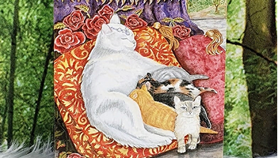
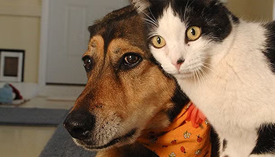

Новини

Кіт, ти маму мав
У центрі міста з’явився загадковий кіт, що викликає більше запитань, ніж відповідей. Чорно-білий, із розумним поглядом і медальйоном на шиї, він щодня приходить до кав’ярні на розі вулиці Шевченка й уважно слухає відвідувачів. Але найбільше здивування викликала фраза, яку, за словами очевидців, він нібито "вимуркав" минулого вечора: «Мяу... ти маму мав?» – свідчить бариста Оля, яка вже третій день приносить котові миску з водою і трохи тунця. Місцеві жителі гадають, що кіт шукає когось із минулого. Хтось навіть припускає, що він — реінкарнація якогось філософа, що повернувся на землю з місією нагадати про сімейні цінності. Хто ця істота з глибокими очима та трагічним поглядом? І головне – де його мама? Розслідування триває.
Інші новини
Кіт Васьок гадає на картах Таро
30 листопада 2024
Студенти групи ПЗ-12 вирішили створити новий сайт для кафедри програмного забезпечення.
Дізнатися більше
Виставка людей. Запрошуємо тварин
2 лютого 2024
Студенти групи ПЗ-12 вирішили створити новий сайт для кафедри програмного забезпечення.
Дізнатися більше